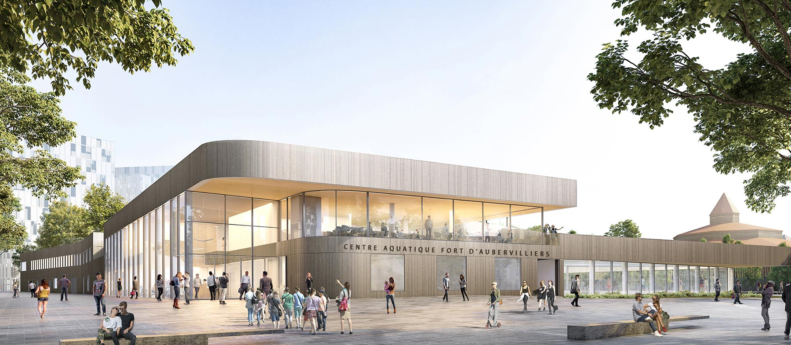
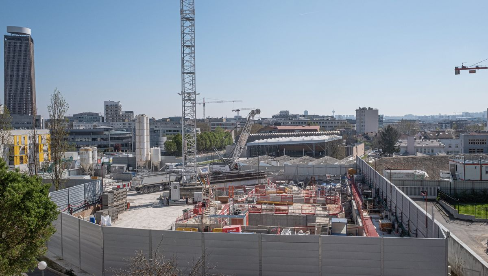

Courrier Olympique

Parisiens, préparez-vous pour l’été 2024 !
L'organisation des Jeux Olympiques de Paris en 2024 déclenche une vague de projets de construction d'infrastructures sportives et urbaines. Ces prochains Jeux olympiques auront lieu majoritairement à Paris et dans sa banlieue en Juillet 2024. Grâce à l'événement, de nombreux chantiers ont été lancés. Par exemple, Fleurance, dans le Gers, et Bourgs-sur-Colagne, en Lozère, vont bénéficier de terrains de sport flambants neuf, le tout grâce à la Française des Jeux. De plus, la construction d’un stade et deux piscines à Vaires-sur-Marne, Champs-sur-Marne et Pontault-Combault a été mise en place.

DEBUNKAGE
Quelques inquiétudes concernant ces infrastructures car il y a en réalité beaucoup d'incertitudes: ces chantiers seront-ils seulement terminés pour l’été 2024? Les infrastructures pourront-elles réellement être utilisées après les J-Os par les écoles et autres services ? (pour qui de telles infrastructures sont nécessaires ?) Et quels seront les tarifs ? (serait-ce donc réellement rentable ?) On peut ainsi voir l’effort que met l’Etat dans les JO 2024, (celui-ci paraissant bien plus important que pour sa propre population au cours des dernières années): 5 piscines construites ou rénovées pour les JO.
Après plusieurs annulations et suspensions, la cour administrative d'appel de Paris a définitivement validé la nouvelle mouture du projet de centre aquatique d'Aubervilliers (Seine-Saint-Denis) afin qu’il serve de centre d'entraînement pour les athlètes des Jeux Olympiques et Paralympiques de 2024.
DEBUNKAGE
La construction de la piscine d’Aubervilliers est fortement contestée par des associations telles que Environnement 93, le Mouvement national de lutte pour l'environnement 93 et Nord Est parisien, ainsi que des usagers des jardins ouvriers des Vertus. En effet, ce parc, sur lequel la piscine doit être créée, en serait réduit de 4000 mètres carrés.Des associations et des citoyens expriment des inquiétudes concernant la perte d'espaces verts, d'installations locales et d'autres problématiques environnementales.

Ce n’est pas tout: Paris 2024 sera l'occasion pour les villes hôtes de développer de nouvelles infrastructures, telles que des stades, des villages olympiques, des centres de presse, des installations de transport et des hôtels. Ces investissements massifs transforment le paysage urbain et renforcent l'attrait touristique de la ville hôte. Par exemple, les Jeux olympiques de Rio de Janeiro en 2016 ont permis la construction du Parc olympique, qui est devenu un lieu emblématique de la ville et continue d'attirer des visiteurs du monde entier. De quoi attirer encore plus de touristes en France, et ce pour un budget de 8,8 milliards d’euros. C’est-à-dire 3 milliards de moins que chez nos voisins les anglais, et deux fois moins qu’à Rio.
DEBUNKAGE
Il a été officiellement annoncé que le financement des JO 2024 s’élèverait à 8.8 Milliards d’euros, seulement, il s’agirait d’estimations incorrectes car le budget a été sous-estimé. En effet, la probabilité du dépassement du budget est très élevée. La France n’aurait pas appris des erreurs des précédents pays qui ont accueilli les JO: les Jeux de Londres (11 milliards d'euros au lieu des 4,8 milliards prévus) ou de ceux de Rio (16,5 milliards d'euros au lieu de 9 milliards). Cela pourrait avoir des implications financières graves.
Et pas d'inquiétude! Les ambitions ne se limitent pas à l'événement lui-même, mais s'étendent à l'héritage que laisseront les Jeux Olympiques. Le gouvernement a exposé ses plans pour les futurs de ces infrastructures: toutes les infrastructures seront réutilisées, telles que les infrastructures sportives qui seront mises à disposition des écoles, ou encore les hôtels qui pourront ensuite devenir des immeubles de logement.
DEBUNKAGE
Le chantier a annoncé un an de retard difficile à rattraper pour les futurs lignes 16 et 17. Il est fort probable qu’elles soient donc une promesse en l’air. Ce retard colossal a même dû mettre un terme à l'ambitieux quatrième terminal à Roissy-CDG (T4). Il était prévu qu’il puisse accueillir jusqu'à 40 millions de passagers par an, mais a été vite abandonné.Ces retards peuvent avoir des conséquences sur la qualité et la viabilité des projets.
Concernant la réutilisation des infrastructures : Rien n’est clair sur la manière dont il sera possible de transformer des hôtels en immeubles de logement (ce ne sont pas les mêmes structures du tout !). Il est important d'interroger la viabilité réelle de la réutilisation des infrastructures après les JO. Certains projets peuvent ne pas être adaptés pour une reconversion post-olympique, et il est important de clarifier comment ces installations seront gérées et entretenues.

DEBUNKAGE
Propagande économique : Il est nécessaire d'analyser de manière critique la notion de "Boost économique" lié aux Jeux. Des études ont montré que les retombées économiques promises ne se matérialisent pas toujours, et il peut être utile d'examiner de près les chiffres avancés par les promoteurs des Jeux.
L’événement s’inscrit comme une véritable opportunité de relance économique dans le tourisme, mais aussi comme un moteur pour promouvoir notre France et amplifier son rayonnement au niveau international. De quoi booster la création d’emploi dont les français pourront bénéficier.
Ainsi, le secteur du tourisme et, en particulier, de l’hôtellerie et de la restauration bénéficieront en premier lieu de l’afflux de visiteurs (touristes, familles olympiques, prestataires de l’organisation…) dans le cadre de l’organisation des Jeux mais aussi des épreuves de test organisées en amont de l’événement. Paris 2024 mobilise plus de 181 000 postes, dont 60 000 dans le tourisme, à la fois temporaires ET permanents non seulement dans ces secteurs, mais aussi dans ceux de la restauration, des transports, de la sécurité et des services de construction. C’est bien plus que l’estimation d’une étude de 2019 ayant estimé à 150 000 emplois cet « Effet JO ».
DEBUNKAGE
Attention, toutefois ! L'examen minutieux de la répartition des emplois générés par les Jeux Olympiques de Paris 2024 révèle un paysage complexe qui mérite une attention particulière. Dire que les Jeux drainent 181 000 emplois ne signifie pas qu’il s’agit d’autant d’emplois créés. Derrière ce chiffre, on compte aussi les emplois déjà existants, comme le reconnaît Christophe Lepetit, responsable des études économiques et des partenariats au CDES. « Mais, malgré tout, des emplois vont être créés », ajoute-t-il, sans pouvoir répondre à la question : « combien ? » Par ailleurs, les chiffres autour du nombre de personnes mobilisées n’incluent pas les 45 000 volontaires – bénévoles – que Paris 2024 entend recruter, bien évidemment sans rémunération. De plus, il est essentiel de souligner que bon nombre des emplois générés sont de nature temporaire, étroitement liés à la période préparatoire, à la tenue des Jeux, et éventuellement à la phase de démontage des infrastructures. L’après Jeux Olympiques et Paralympiques ne garantit pas un même élan d’activité pour les français.
Ces chiffres ont été dévoilés le jeudi 21 septembre 2023 par le Centre de droit et d’économie du sport (CDES) de Limoges, cinq jours avant une journée « Les Jeux recrutent », organisée par Paris 2024 à la Cité du cinéma, dans le futur village olympique, à Saint-Denis (Seine-Saint-Denis), et au cours de laquelle 16 000 postes ont été proposés. En fin de compte, la célébration des Jeux Olympiques à Paris en 2024 offre une opportunité sans précédent de cultiver une fierté nationale vibrante et de stimuler un effet positif durable sur la culture locale. Prenons l'exemple marquant des Jeux Olympiques de Tokyo en 1964, qui ont symbolisé le renouveau du Japon après la Seconde Guerre mondiale. La tenue des Jeux Olympiques à Paris en 2024 offre à la France une occasion similaire de réaffirmer son héritage culturel, artistique et historique. Ces Jeux Olympiques, bien plus qu'un simple rassemblement sportif, représentent une opportunité de mettre en valeur le patrimoine français et de réaffirmer les valeurs qui ont forgé la nation.